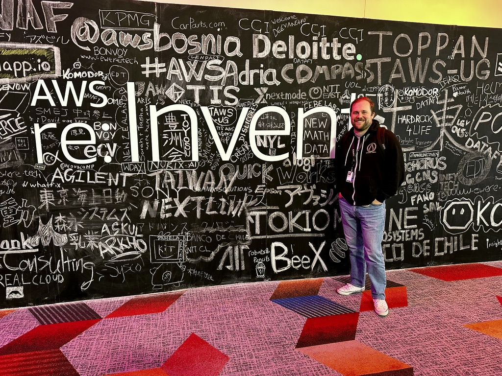

me at AWS re:Invent
I build cloud infrastructure, internal tools, and online services at scale for millions of concurrent users.
// gitlab contributions — last 52 weeks
All of my professional work lives in private GitLab repositories.
// the journey
👶 Orange County, CA
Grew up in southern California. Started out studying arts and humanities, but caught the programming bug and switched to CS.
🎓 Portland, OR
Moved to Portland to study CS at Portland State University. Worked full time through school (eventually as a team leader at Whole Foods) and graduated in 2021 with a 3.77 GPA.
Contracted as a UI QA Engineer at MightyNetworks and did some programming tutoring while getting my footing.
🎮 Dallas, TX
I joined Gearbox in 2022 and work fully remote.
🏖️ Wilmington, NC
Traded the Pacific Northwest for the Atlantic coast. Same work, better beach access.
// how this works
This page is plain HTML, a stylesheet, and a sprinkle of JavaScript via Alpine.js. I reached for Alpine because the right tool is usually the smallest one that does the job.
Simplicity is not a constraint. It is a principle I try to apply to everything I build.
"Perfection is achieved not when there is nothing more to add, but when there is nothing left to take away." - Antoine de Saint-Exupery
// cool stuff I worked on
ascii-commit
Recruiters hate this one trick: A CLI tool that paints ASCII art into your GitHub contribution graph. Pass it an art file, it figures out the commit schedule and does the rest.
loficode
A blog platform built from scratch on Go and HTMX. Templated and static, drafted from a WYSIWYG, deployed to S3 and CloudFront, with progressive enhancement handled by Lambda. Costs almost nothing to run. I wrote all about it on my blog.
Gearbox SHiFT Platform
Online services engineer for Tiny Tina's Wonderlands and Borderlands 4. I also maintain the backend platform that powers the entire Gearbox game catalog.